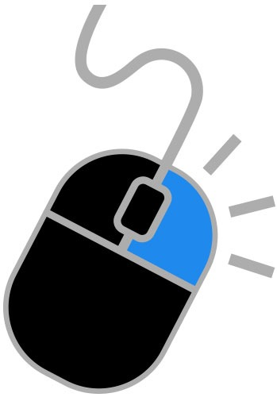

Lab 9 - Libraries & jQuery
Challenge
The challenge of Lab 9 is to experiment with jQuery and use libraries, while working together with a partner. The most challenging part was getting the buttons to work properly with .special in lab.css.
Problems
As stated above, getting the buttons to work properly in css and JavaScript was by far the most challenging problem of Lab 9. My partner Siran helped a lot by looking at my code and suggesting tips. Proofreading also helped to eliminate any typos in my code.
Results
Well, you are viewing the index.html file that I created.